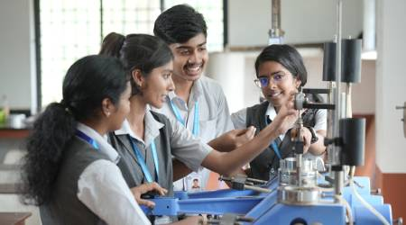

Civil Engineering

The Department of Civil Engineering of Adi Shankara Institute of Engineering and Technology has been functioning since 2013. Initially the Department was affiliated to Mahatma Gandhi University, Kottayam. Currently, the department offers a four year B.Tech programme under the affiliation of APJ Abdul Kalam Technological University (KTU) . The Department has a sanctioned intake of 60 students under the programme. The Department has grown tremendously over the past eleven years and have eight batches of students who have graduated from the Department. This is a professionally run department, focusing on an education system that emphasizes deep learning of the fundamentals, research and entrepreneurship to contribute to society and environment. The Department is accredited by the National Board of Accreditation (NBA) for the academic years 2024-25, 2025-26 and 2026-27.
Apart from academic courses, the department provides various add-on courses, hands-on training of software, industry incorporated expert talks, seminars and workshops to students as well as the faculty. The department has signed MoUs with various recognized institutions like KKM Soft, which can enhance the knowledge and original thinking of students.
As a never old discipline of engineering, the graduates from the department have a wide choice of career opportunities, right after their course. The students from the department have been placed in core companies like Dalmia Cements, as part of campus placements. Apart from the private companies, the job opportunities in public sector jobs, like Railways, SAIL, NTPC, BPCL, PWD etc. are higher when compared to other streams engineering.
The department is backed up by faculty who have completed their post graduations and PhDs from elite institutions like IITs and NITs. The department has well equipped laboratories and computing facilities to aid the students and faculties in research work and consultancy services.
Vision
To emerge as a centre of excellence in Civil Engineering with global perspectives
Mission
To impart quality professional education so that the students emerge as a competent professional in the area of civil engineering.
To promote innovative thinking and lifelong learning in budding engineers.
To produce civil engineers who have imbibed ethical values to serve the society and nation.
Program Educational Objectives (PEOs)
- Graduates will have a potential to pursue higher studies and research in the field of civil engineering.
- Graduates will be able to produce sustainable solutions with professional ethics for real time civil engineering problems.
- Graduates will have managerial skills and leadership qualities in execution of civil engineering projects.
- Graduates will be able to work with integrity and ethical values.
Program Specific Outcomes (PSOs)
After successful completion of B.Tech in civil engineering, the students will be able to:
- Check the feasibility and sustainability of civil engineering projects by conducting geotechnical investigation, civil engineering survey and environmental impact assessment.
- Analyse and design buildings, hydraulic structures and water distribution, waste management and transportation systems.
- Execute civil engineering projects with their knowledge in estimation, project management, construction materials and technologies